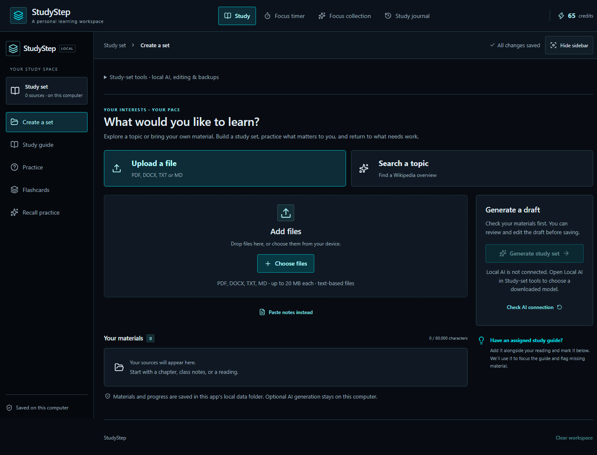

Make it inspectable.
Connect findings to their sources.
Personal learning software I’m building.
Turn topics and source material into reviewed study sets, then build a routine with practice and focus.
01 / 07 — FINDStudyStep starts with what you want to learn. Search a topic or bring your own material.
